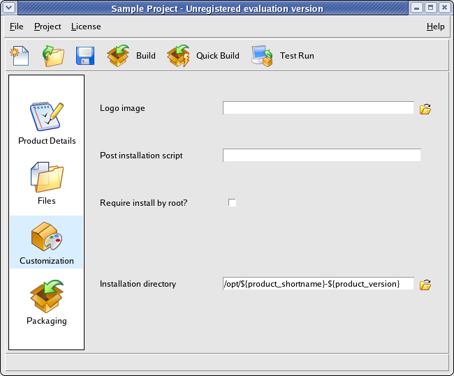
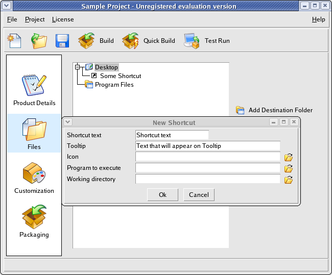

Advanced Functionality
This section explains how to customize the generated installers in different ways.
The first thing you should know about are installer variables.
They can be included in different settings as ${variablename} and they will be
substituted for their values during installation.
For example, if you write the default installation directory as /opt/${shortName}-${version}
then during installation time the user will see /opt/sample-1.0 If you update the product version to 2.0 later on, the change will
be reflected automatically. So whenever possible, avoid hardcoding references and use installer variables instead.
Starting with InstallBuilder 5, variables are case-insentitive. This means that you can use any of the following variants, ${variablename}, ${VariableName} or ${VARIABLENAME},
obtaining exactly the same value on each case.
The current version of InstallBuilder supports the following installer variables.
- ${installdir}: Directory where the product will be installed.
- ${product_fullname}: Product Name. The full product name, as it will be displayed in the installer
- ${product_shortname}: Product Filename. Short version of product name, will be used for naming certain directories and files, and can only contain alphanumeric characters
- ${product_version}: Version Number.
- ${platform_install_prefix}: Platform-dependent default installation location. In Unix systems, when running as root it will be
/opt and when running as a regular user, the home directory for that user.
- ${platform_exec_suffix}: Platform-dependent executable file extension for the generated installer. In Unix systems it is
.bin, on Windows it is .exe, and on OSX it is .app
- ${platform_name}: Target platform for the installer. Currently
it can be
linux, linux-ppc,
linux-x64, linux-ia64, linux-s390,
freebsd, freebsd4, freebsd6, freebsd6-x64,
solaris-sparc, solaris-intel,
irix-n32, osx, windows,
aix or hpux.
- ${linux_distribution}: When the installer is running on Linux, it will contain the specific Linux flavor name. Currently, one of
debian, suse, mandrake, redhat, rhelfedora, slackware or unknown for another distribution.
- ${installation_langcode}: The ISO code for the language the installer was run with.
- ${installer_is_root_install}: Whether the installer is being run as root or not.
- ${installer_ui}: Whether the installer is being run in 'text', 'gui' or 'unattended' mode.
- ${installer_directory}: Directory where the installer binary is located.
- ${machine_hostname}: Machine hostname
- ${machine_ipaddr}: Machine IP address (derived from the hostname)
- ${required_diskspace}: Required size in KB of the files that will be installed. Only files in components that are selected for installation will be taken into account when making the calculation. Notice also that this reports the size in KB of the files, not the actual disk space that will be taken, which may vary depending on the block size of the target filesystem.
- ${system_username}: The name of the user who is running the installer.
- ${system_temp_directory}: Path to the system's temporary directory.
- ${user_home_directory}: Path to the home directory of the user who is running the installer.
Additionally, it is possible to access any environment variable using the ${env(varname)} construct, where varname is the name
of an environment variable. For example, on Windows you can refer to the
system drive with ${env(SYSTEMDRIVE)} and in Linux, Mac OS X and other Unix
systems to the user home directory
with ${env(HOME)}
Installer Customization
In the Customization (Figure 18) and the Packaging screens you can change the default installation settings to
match your needs:
User Interface Settings
- Logo image: 48x48 GIF or PNG logo image that will be placed at the top right corner of the installer. If no image is specified, the default one will be used
- Left side image: 163x314 GIF or PNG image that will be placed at the left side of the installer in the Welcome and Installation Finished pages. If no image is specified, the default one will be used
- Windows Executable Icon: ICO file with an specific format -see below- to set the icon for the installer executable file on Windows systems. The icon file can contain up to three different icons that must match one of the following formats: 16x16 pixels and 256 colors, 32x32 pixels and 256 colors, 48x48 pixels and 256 colors.
- Default installation language: Default language for the installer. Use 'auto' for autodetection of the current language
- Allow language selection: Allow language selection. If this setting is enabled, the user will be required to specify the language for the installation
- Wrap License File Text: Wrap license file text displayed to the user
- Splash screen delay: Extra display time of the splash screen
Installer Settings
- Require install by administrator: Whether installation will require super user privileges (root on Linux, Administrator user on Windows and OS X). In all OSes but OS X this setting will prevent the installer from running if the user is not root or Administrator. In OS X, the regular authentication dialog window will be shown, asking the user for the administrator password so the installer can be run with root privileges
- Installer Name: Name of the installer created by the build process. If it contains ${product_shortname}, ${product_version}, ${platform_name} or ${platform_exec_suffix} they will be replaced by the appropriate values
- CDROM files Directory: Name of the directory that will contain the CDROM files created by the build process
- Uninstaller directory: Directory where the uninstaller will be created
- Installation directory: Default installation directory
- Compression algorithm: Compression algorithm that will be used to pack the files inside the installer. LZMA compression is available on Linux, Windows and OS-X platforms
- Backup Directory: Path to a directory where old files will be stored prior to overwritting
- Installation Scope: Whether to install Start Menu and Desktop links for All Users or for the current user
Script Settings
- Post Install script: Program that will be executed as the final installation step. The program or script must have execution permissions and you need to include it as part of the installation. Since you do not know beforehand where the user will decide to install the software, you need to prefix it with ${installdir}. You can also pass additional arguments to the script. For example : ${installdir}/bin/myscript.sh somevalue ${installdir} will invoke the myscript.sh program with two arguments, 'somevalue' and the installation directory
- Post Install script arguments: Command line arguments to pass to the Post Installation Script
- Show Post Install result?: Whether to show the output result of the post installation script, even if it completed successfully
- Pre Uninstallation script: Program that will be executed before uninstallation. The program or script must have execution permissions and you need to include it as part of the installation. Since you do not know beforehand where the user will decide to install the software, you need to prefix it with ${installdir}. You can also pass additional arguments to the script. For example : ${installdir}/bin/myscript.sh somevalue ${installdir} will invoke the myscript.sh program with two arguments, 'somevalue' and the installation directory
- Pre Uninst. script arguments: Command line arguments to pass to the Pre Uninstallation Script
Particularly important is the Post Install script setting.
It allows you to perform specific actions required to correctly finish installing
your product, such as initializing a database or starting a server in the background.
Permissions
Please note that these options only take effect when creating installers for Unix platforms from Windows.
- Default Unix File Permissions: Default Unix file permissions in octal form
- Default Unix Directory Permissions: Default Unix directory permissions in octal form
Figure 18 : Customization screen

Additional Settings
The installer supports a number of features that are not yet available through the GUI. For this, you will need
to edit the XML project file directly.
- readmeFileEncoding: Readme file encoding. Default value: iso8859-1, valid values: iso8859-1 iso8859-2 utf-8 cp1251 cp1252 ascii macRoman unicode.
- licenseFileEncoding: License file encoding. Default value: iso8859-1, valid values: iso8859-1 iso8859-2 utf-8 cp1251 cp1252 ascii macRoman unicode.
- deleteOnExit: Whether to delete the installer binary once the installation has completed
- rebootRequired: Whether to ask the user to reboot after installation is completed (Windows-specific option).
- installationLogFile: This project property allows you to set an alternative path to store the installation log file. Please note that the installation log will only be written to the location specified once the installation has completed. Otherwise, it will still be available at the system's temporary directory (usually /tmp on Unix systems)
- enableRollback: Enable temporary backup of old files that will be saved in case of overwritting, and that will be restored if the installation fails. The implementation only handles files overwritten by the installer during the files installation step (i.e., all files specified under any of the sections). It does not support rollback for files overwritten as a result of the execution of actions or scripts. This feature is enabled by default.
- rollbackBackupDirectory: Path to a directory where old files will be stored prior to overwritting.
- removeLogFile: This project property controls automatic deletion of the generated log file after installation. It is set to 0 by default. If set to 1, the installer will remove the log file.
- defaultInstallationMode: Default installation mode. Available installation modes can be found by running the installer from command line using the --help option.
- productDisplayIcon: Application Icon (.ico format) that will be shown in Add/Remove Programs on Windows.
- disableSplashScreen: Disable the initial splash screen.
Additional Installation Folders
Most applications only install files under the installation directory ("Program Files" folder in the Files screen). It is possible,
however, to add additional folders to copy files and directories to, such as /usr/bin or /etc/ by pressing the
"Add Destination Folder" button in the Files screen.
If you need special permissions to write to the destination folders, you may need to require installation by root (see previous section)
Shortcuts
You can create application, document and URL shortcuts in the Files screen. Program shortcuts are special files
containing information such as a program to execute and an icon to display.
If you are distributing a GUI program that runs on Windows, KDE or Gnome, you can place a shortcut
for your executable in the Desktop or in a folder and the associated icon will be displayed. When the user clicks on the icon,
the associated program, document or URL will be launched. Figure 19 shows the prompt you
get when adding an Application shortcut to your product installer. It has the following fields:
Common
- Shortcut text: Shortcut text
- Tooltip: Tooltip text for the shortcut
- Platforms: Platforms in which this link shortcut will be created
Unix settings
- Unix Icon: GIF or PNG Image to use for the shortcut
- Program to execute: Program to execute, including command line arguments
- Working directory: Working directory for the program being executed
Windows settings
- Windows Icon: File containing .ico image
- Program to execute: Program to execute
- Working directory: Working directory for the program being executed
Notice that the target program to execute must have been installed with your product, so the value for
Program to execute and/or winExec
should include a reference to the installation directory and look similar to:
${installdir}/foo/bar/program where foo/bar/program is the path to your program relative to the installation directory. At
installation time, ${installdir} will be substituted by the appropriate value.
It is also possible to create shortcuts that point to directories, documents or URLs. Select the "Document" or "URL" option when creating a shortcut
On Windows, Start Menu and Desktop shortcuts are by default created for All Users, or for the current user in case there are not enough privileges.
InstallBuilder allows to modify this behavior via the project property <installationScope>, which can be
set to "auto" (default), "user" or "allusers".
Figure 19 : Adding a shortcut

Using the Command Line Interface
You can build projects from a shell script or the command line issuing the following command:
$ /home/user/installbuilder-5.1.1/bin/builder build /path/to/project.xml |
For example
$ /home/user/installbuilder-5.1.1/bin/builder build /home/user/installbuilder-5.1.1/projects/project.xml |
will compile the Sample Project mentioned earlier in this document.
By default, it will build a Linux installer. You can pass an optional argument to the command line
to indicate the target platform. For example:
$ /home/user/installbuilder-5.1.1/bin/builder build /home/user/installbuilder-5.1.1/projects/project.xml windows |
RPM Integration
BitRock InstallBuilder allows you to register the software installed with
the RPM package database.
To enable RPM support add
<registerWithPackageDatabase>1</registerWithPackageDatabase>
to your installer project file. This will register your installation
with the RPM database. From this point on, you will be able to query
data about your application and its installed files using your
distribution's rpm-based tools as with any other existing rpm
package. You will also be able to uninstall the application using your
distribution's rpm-based tools.
RPM database integration requires installation as root in an
RPM-based distribution. Otherwise, the setting will be ignored.
Additionally, to successfully register an RPM, the following tags
must be also present in the XML project file:
<vendor>Your Company Name</vendor>
<summary>Detailed description of your software</summary>
<release>0</release>
<description>A one-line description of your software</description>
|
The name of the RPM package registered will be ${product_shortname}-${product_version}-${release}
The XML Project File
BitRock InstallBuilder stores all the information about the installer project in an XML file, usually located under
/home/user/installbuilder-5.1.1/projects/ (or C:\Users\user\Documents\InstallBuilder\projects under Windows Vista).
The XML format of the file is designed to be reasonably easy to edit
by hand, allow automated manipulation using scripts and track changes using a
source control tool such as CVS. You can find a sample XML project file in the Appendix.